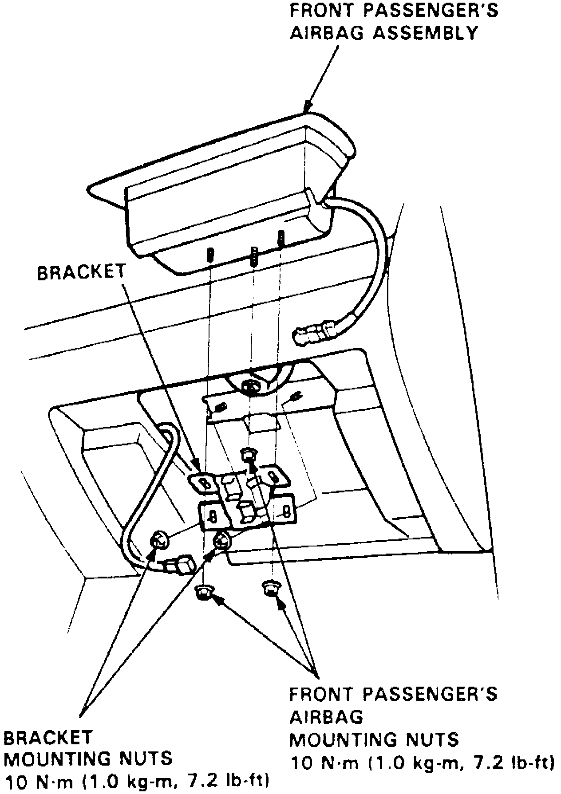

Air Bag: Service and Repair
WARNING: Prior to performing service procedure, disarm SRS as outlined under Supplemental Restraint System (SRS) Disarming and Arming. Failure to disarm SRS could result in system deployment and personal injury. SRS electrical wiring can be identified by a yellow outer protective coating.REMOVAL
1. On models equipped with radio coded theft protection system, refer to Vehicle Damage Warnings for system disarming and arming procedures. On models equipped with airbag system, refer to Technician Safety Information for system disarming and arming procedures.
Fig. 15 Passenger's Side Air Bag Replacement:

2. To remove driver side air bag, proceed as follows:
a. Remove maintenance lid and cruise control set/resume switch cover from steering wheel.
b. Using a T30 bit, remove two Torx bolts attaching air bag assembly to steering wheel.
c. Carefully lift air bag assembly from steering wheel.
3. On models equipped with passenger side air bag, proceed as follows:
Fig. 15 Passenger's Side Air Bag Replacement:
a. Remove four air bag assembly mounting bracket nuts, Fig. 15.
b. Remove bracket and one mounting nut from passenger side air bag assembly.
c. Carefully lift passenger side air bag from instrument panel.
3. Store air bag assembly in a secure area with pad surface facing upward.
INSTALLATION
1. Ensure battery cables are disconnected and red short connector is connected to air bag electrical connector.
2. Position driver's side air bag to steering wheel and secure with new Torx bolts. Tighten air bag to steering bolt to specifications.
3. On models equipped with passenger side air bag, proceed as follows:
a. Position air bag assembly to instrument panel, Fig. 15.
b. Press air bag assembly downward and rotate adjusting nuts, until adjusting nuts contact lower portion of air bag assembly.
c. Tighten middle air bag mounting nut, then install four mounting nuts and bracket.
d. Tighten two outer air bag mounting nuts, then tighten the two bracket nuts.
4. Check horn switch and cruise control set/resume switch for proper operation.